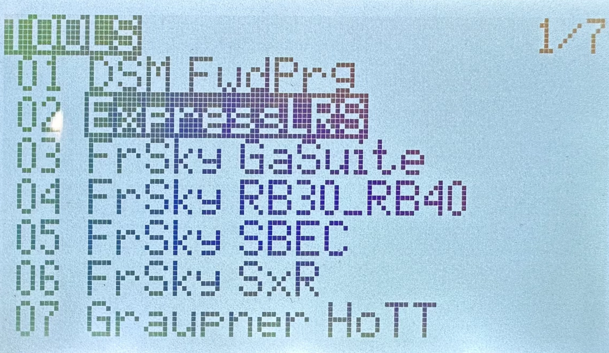
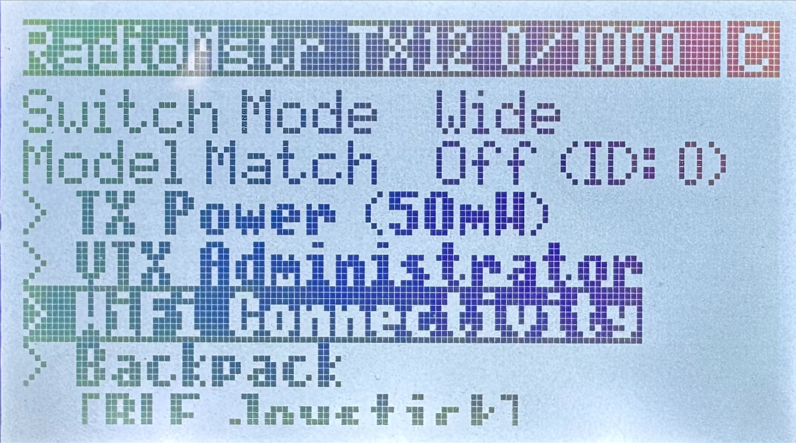
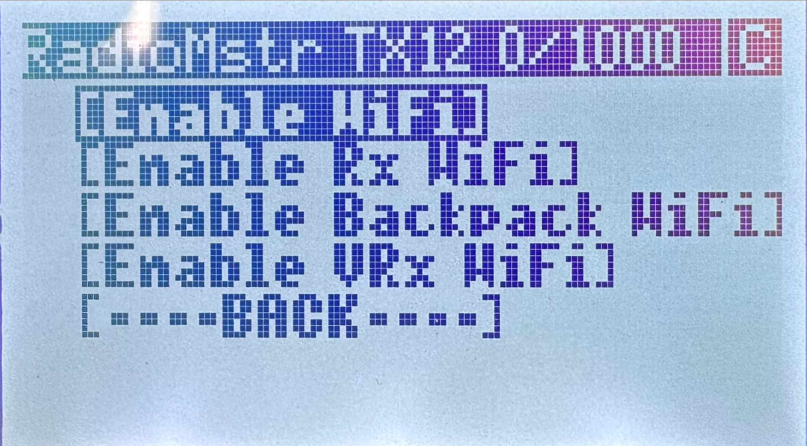
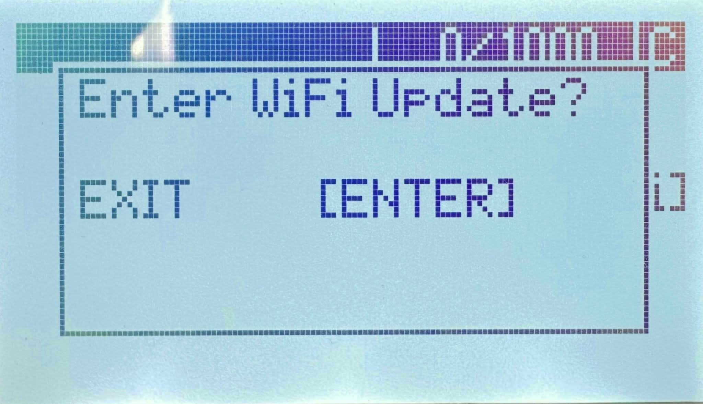
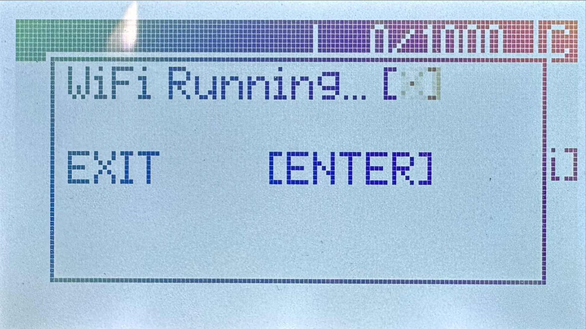
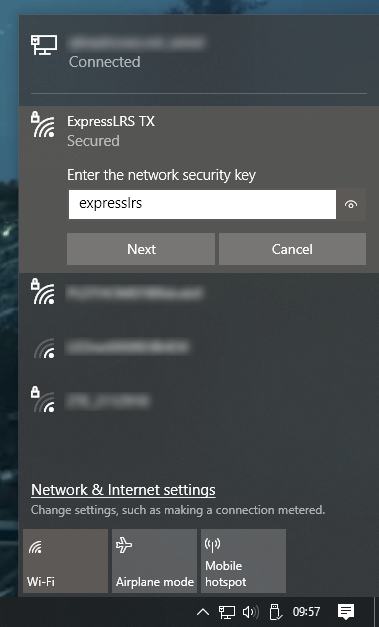

Включите пульт РУ зажав кнопку “Power”
Перейдите в меню нажав кнопку “SYS”
Далее в меню ExpressLRS ⭢ WiFi Connectivity ⭢Enable WiFi (для навигации по меню используйте кнопку “Menu”)
Далее нажмите “Enter”


Подключитесь к приемнику как к точке доступа WiFi:
сеть ExpressLRS TX
пароль: expresslrs
В окне браузера введите адрес 10.0.0.1
Перейдите на вкладку “Update”
Выберите скачанный ранее файл с прошивкой
Нажмите кнопку “Update” - пульт обновит прошивку и перезагрузится
Повторно подключитесь к пульту по WIFI и запустите окно настроек в браузере (пункты 4-8)
Перейдите на вкладку “Options”
В строке “Binding phrase” введите фразу (любое сообщение: не менее 6 символов, латинские буквы, заглавные буквы, спец. знаки, цифры)
Нажмите кнопку “SAVE”